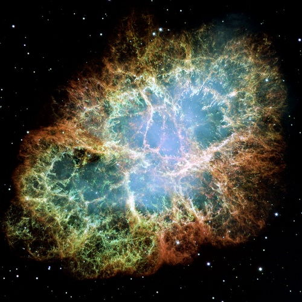

从“1987A”超级新星的爆炸光芒
认识佛说宇宙奥秘
“佛刹”是什么？
冯冯
慈忍 / 誊录
一、 “一九八七A”超级新星的诞生
这件今年一九八七的天文界大事，就是在二月十三日之夜，无线电天文望远镜电脑收到了大麦哲伦星云（Large Magellanic Cloud）从十七万光年外发射的光芒！
今年一九八七年初，天文界又再传出喜讯，令人十分振奋！这件大事，又一次使我深深感到佛说宇宙学符合宇宙真相，而且也可证明了用科学新发现去印证佛说宇宙学，并非“牵强附会”！
大麦哲伦星云，在我们地球南半球的下方太空深处，据天文界的测定，距我们十七万光年，（过去曾有某大学百科全书刊载为距离五十万光年，不确。）它的直径大约十万光年，是一座小型的星云漩系。（我们的银河系直径是五十万光年）这座大麦哲伦星云内有一个光亮的超级星系，比同一星系内的其他星球光亮得多，天文学家一向推论这是一个超级新星（Supernova）。
一个星球或星体，在衰老末期，突然爆射强烈的光芒后，逐渐耗尽能源，终于成为一个中子星(Neutron Star)或中子太阳(Neutron Sun)。这是天文学家称之为“超级新星”。大麦哲伦星云内的那个巨星，就是一个这样的超级新星。
天文学家早就知道它是超级新星，但是，一直未收到它的爆炸辐射出来的光芒，直到一九八七年二月二十三日之后，才突然收到，这消息引起天文学界的狂喜。
十七万年前，正当我们的地球仍在冰河时代，南非洲当时的气候很冷，那时候，遍地都是狒狒，鬣狗（一种凶残的野狗，似狼亦似豹），长颈鹿，现已绝种的巨马与巨荦，长角达十三英尺的巨牛，那时候，尼安特陀人（旧石器时代的原始人Neanderthal)尚未出现，不过，已经出现了以两脚直立的原始人──今天人类学家称之为旧石器时代的原始猿人（Archaic Homo Sapiens）已经懂得使用石头行猎和制造很原始的石器工具，例如石斧石刀等等。
旧石器时代原始人必定会在一个晴朗的晚上，仰视南方的天空，看见这座麦哲伦星云的一团灿烂光雾，像要爆炸挣脱星环状的周围星团似的。原始人当然不会知道，这星云内中央的一颗巨星就在那一夜突然爆炸，迸发了极强的辐射光芒，使南方天空上的千万颗比太阳大上多倍的星体为之失色，这个新诞生的超级新星的强光，以八十万六千二百八十二英尺秒速，向四方八面射出，其中有些光芒射线，经过十七万年（我们地球的“年”）才于今年二月二十三夜到了地球，让我们看见！证实了天文学家测距十七万光年是准确的。
大麦哲伦星云在我们在我们地球南半球下方天空，算是所有的星云之中最接近我们的了，但是，以光的速度也还需要十七万年才到达地球。佛经中提及那些越过千百亿个佛刹宇宙的世界，不是又一次获得天文学发现的支持吗？
推论下去，既有确证十七万光年以外有大麦哲伦星云。那么几十万至两百亿光年以外的星云也是确有存在的，千百亿佛刹以外的宇宙群，当前天文学尚无能力测见，但是，从十七万光年以外，推证到两百亿光年以外，与四百亿光年以外，也可进一步推证到千百亿佛刹时空以外必有无数不可说数目的宇宙群。
这些本来就是很有科学的佛经宇宙学，又有什么“神话” “ 迷信”呢？
只是那些完全不懂科学与天文学的学者，目光短小，只知在“文字学”上钻牛角尖，存心要把佛学佛教降贬为纯粹的人文主义哲学，这样一来，就可以摆脱“倡导迷信”之嫌，而是方便其论文拿哲学学位。又有些学者，认为研究佛经中的超自然及宇宙学无关人文宏旨，他们说这些都是“神话”“想象”，不值得研究，只要研究其人生哲学与辩证学就够了。
殊不知诸佛讲经必讲超自然的用意，是因为佛法是超越这一个时空宇宙的宗教真理，它是延伸到无限世界，无限宇宙群，无限众生的。佛法不是仅仅接引地球人类而已。佛经内纪录的是佛法接引多元宇宙群，各种各色的微尘数宇宙世界的有色无色众生的叙事体文字。我们不知天道，怎知做人？做人的道理，也是宇宙法则的一环呀。
萧顿以为是影片上的错误，他走到外面，仰望南天，用不着望远镜就凭肉眼，也看见了这个光芒万丈的超级新星，虽然无线电天文望远镜常常摄录了多达成千成万的超级新星，但是，那些都太遥远了，不是人类肉眼所能看见，人类的肉眼视力太有限了！这是自从公元一八八五年肉眼见过一次超级新星之后的首次再可肉眼见到超级新星！更重要的是，这一个超级新星是我们最接近的邻居！它是一六零四年出现的超级新星以后，最光亮的一个。
一九八七年二月二十三日之夜，在南美洲智利国北部。八千英尺海拔的高山上面的拉斯金般那斯天文观测台（Las Campanas Observatory）二十九岁的加拿大天文学家衣恩?萧顿（Lan Shelton）发现电子天文望远镜摄影机上的影片摄录下了一团强烈的星光，是位于大麦哲伦星云内的大蜘蛛星云（30-Doradus Tarantula Nebula）附近放射出来的。这是该处前所未见的巨大光亮。
萧顿的发现，立刻获得天文学界的公认，并且命名该一超级新星为“一九八七A”，就是说，它是一九八七年发现的第一个超级新星。这个新发现引起了全球各国天文学界的惊喜，天文学家们纷纷飞到智利来观察这个“一九八七A”，这是当代天文学界首次首次获得这样的接近机会来以肉眼直接观察超级新星，难怪科学界们欣喜若狂了。
（爆炸之前）（爆炸之后）
大麦哲伦星云内一个星球于十七万年前爆炸，成为超级新星命名为“一九八七A”。图为天文录影它一九八七年二月二十三日之夜射到地球的光芒，图左为以前未射到的图，右为已射到的图。
科学家们还有一个惊喜的理由。那就是如此接近的观察超级新星的爆炸，可以确切地观察和分析宇宙的形成过程与物质元素形成情形，在过去，科学家们已经运用精密的仪器来研究及分析了很多超级新星，知道其爆炸后会产生很多元素，又复旋转为星尘漩涡系统，其内的许多小组漩系又逐渐形成了新的星体与行星，行星逐渐冷却之后，有些就出现有生命形态的生物，除此之外，星云爆炸会辐射出许多宇宙射线（Cosmos Rays）,引起我们地球上生物的异变（mutation）及进化（Evolution）。我们人类与各种动植物，都是由超级新星的物质构成的，无怪乎伊利诺大学太空物理学家拉理?史玛尔（Astrophysicist Larry Smarr）说：“我们是超级新星的子孙”。
科学家们所知道的超级新星的成住坏空循环过程，在佛说诸经内，都早已开示。起世经、大楼炭经、泥犁经、泥洹经、七日经……等等都有提过，上文已举例过，兹再摘一段，“起世因本经第九”住世品第十一说：“……有诸世界，转住转坏，无有间时，” “……须弥山王，悉皆起烟 ……其火大盛，充塞溢满……山峰崩落，其火焰烧，风吹上烧梵天……乃至光音……”说的大火，就是爆炸，须弥山王，就是星云漩系中心，风吹就是指辐射，这种叙述，在阿含诸经内，多得不胜枚举。
加拿大多伦多大学天文学家罗拔?加利臣（Ribert Garrison）是智利拉斯金班那斯天文台使用多伦多大学设置该处的天文望远镜的，他说：“此次一九八七A的爆炸发现，等于是写出宇宙的教科书，这一次的接近观察，将会证明一向的天文学理论是否正确。”
诺贝尔物理学奖金桂冠得主，鲁比亚博士(Nobel Laureate Carol Rubia)说：“在过去，对超级新星的研究，只是科学上的幻想，现在才是真正的研究开始。”
看到“一九八七A”的光芒射到的录影，就好像看到了十七万年的天象星座历史影片的重映！可惜这个超级新星只能从地球南半球看得见，北半球的居民是没有这份福气了。在南半球的澳大利亚、南非、南美各国，现时已云集了全世界的顶尖科学家与很多业余天文观测者，大饱眼福。美国太空署(NASA)也紧急命令它的一些太空船立刻观察此一新星。预备于一九八九年将飞抵海王星的“航行者二号”“Voyager II”，已受命将两架紫外线侦察仪指向“一九八七A”，“ 太阳系玛斯”(Solar Max)卫星也将注意力从原指定目标的太阳移向“一九八七A”的甘玛射线了(Gamma Rays)。“国际紫外线探险者卫星”(Ultraviolet Deteotor)也开始测量“一九八七A”的紫外线辐射量，日本亦紧急发射一座卫星去测量“一九八七A”的热气辐射。
到了三月中旬，科学家们已经收到了很多资料，多到来不及分析，证实了一向的理论没错。
在美国和加拿大之间的伊利湖(Lake Eric)地下盐矿，在日本的一座铅矿与锌矿，在法国与意大利之间的白朗峰大隧道(Monte Blanc)，在苏联的艾布鲁斯山(Mount Elbrus, USSR)地下隧道……科学家们已经纷纷检验电脑打出的辐射量报告，希望能找到超级新星爆炸所产生的虚无其体的微中子(Neutrino)会有一些射来，给液体的微中子侦察仪所捕捉到，美国太空署于二月底在葛达太空中心(NASA Goddard Space Flight Center)，举行紧急临时召集科学家会议。
最早的资料收集，显示出“一九八七A”周围的气体外壳是向外扩展的，其扩展速度接近每秒钟一万英里，不久，这个超级新星的颜色很快就从蓝色变为红色，比科学家们预期的为快，美国资助的智利多罗洛山天文台(Cero Tololo Observatory)台长美国天文学家罗拔?威廉士(Robert Williams)说：“它变色比别的超级新星快了五至十倍。”
这种急速变色，显示着它的外壳气体已经因急速扩张而加速冷却，致使辐射的光线波长移向光谱上可见的红光一端。(通常，新星由蓝光变红光就是趋向衰老坏空，光芒渐减。)
它还有一种奇怪现象，那就是它的亮度不很高，罗拔?威廉士说：“照它的开头光芒来看，它应该有的亮度，至小是从一到零指数”。(指数越低，亮度越高，这是天文学用以形容星体亮度的惯例标准，例如：天狼星(Sirius,中国称天狗星)的亮度指数是“负一点五”(-1.5 Magnitude)倘若“一九八七A”的亮度指数是零，它就会成为夜空上最灿烂光亮的星星了，可是，“一九八七A”的亮度读数只有四点五，相对于一颗中级亮度的星球，而且，光亮摇摆不定。
这情形引起威廉士推测“一九八七A”可能含有一个前身星球(Antecedent)──那可能是体积较小的。”科学家们因此检查大麦哲伦星云的历来摄影图，他们认为其中的一颗蓝色巨星SK-69-202可能就是这个“一九八七A”的前身。但是，蓝星的年龄尚轻，不似可以突然衰老爆炸。
两星期之后，“一九八七A”的紫外线辐射已经消失，紫外线侦察仪重新发现了上述蓝星。安然无恙，这才使科学家们松了一口气，他们随即又将目光转移向影片上的其他两个较暗淡的星球，不过，这也使他们觉得不对劲，超级新星的前身不该这样暗淡。
不过，这时传出了喜讯！四架微中子侦测仪都录到了微中子从“一九八七A”光灭前射到的好消息，证实了虚无的微中子的存在。（后文再论）
二、六种震动与“黑洞”地狱
中国古代历代的天文学家都细心地记录下来天象情形，“钦天监”就是中国古代的天文台台长，他们密切地注意观察天象。最注意的就是“紫微垣”（帝座的安危，紫 微帝座在北斗七星之上方，从古以来被视为皇帝的天命所寄，倘若有“客星”来犯紫微垣，那就会有天灾兵灾人祸，所谓“客星犯帝座”，是中国古代最厉害的天象。客星能犯紫 微，即是说飞来飞去，可能是彗星吧？不过，有些西方学者认为中国人所惧怕的客星是超级新星的爆炸光芒侵射了紫微座（现在西方人叫做蝎子座Scorpion Constellation 附近的安他里士星Antares）。中国的钦天监在公元前一千三百年就记录到客星犯紫微座。不过，我认为那可能是彗星。
东汉灵帝刘宏中平二年（公元一八五年），钦天监纪录称：“中平二年十月癸亥日，客星现于南门，巨大如席多彩闪光，至翌年六月，渐行缩小无踪。” （此处从英文资料取来，手头因无“汉书”，未能提供原文）。现代西方天文学家很多认为这是一个超级新星。中国历史记载有在最近一千年来发现过有在银河系内五个超级新星的爆炸。
埃及古经上提到公元一零零六年的特别明亮超级新星，日本古籍也提到公元一一八一年的新星爆炸，肉眼可见的最巨大的新星爆炸，应推公元一零五四年七月四日发生的，在猎人座（Orion）附近金牛座（Taurus）的一个新星，它的爆炸半径只有六千光年，但是它的烟雾至今仍未散去，成为玫瑰色美丽星云奇观，现代天文学界命名之为 “巨蟹星云”(Crab Nebula)，它的光芒，肉眼可见，堪与金星相比，白日亦可看见。中国古代天文学家当然亦有记载下它的爆炸（请参看“宋书”中宋仁宗至和元年的钦天监纪录，因手头无史书，未能撷取原文）。日本国史亦记载有此事。
这座“巨蟹星云”，提供了很多资料，让当代科学界得以从兹研究新星爆炸及宇宙成坏。

欧洲人要到公元一五七二年才初次有记录看见超级新星。丹麦天文学家狄曹?布拉希（Tycho Brahe）纪录下他看见了新星于天后座之内（Cassiopeia）。
一六零四年，布拉希的前任助手庄那顿?克普勒（Jonathan Kepler）发现了天蛇座（Ophiuchus）内的一个肉眼可见的超级新星。发现时，它仍未爆炸扩张至最大点，因此，克普勒的肉眼观察记述对于天文学界有很多很好的参考资料。不幸地，此星光照夜空为时仅五年，等不到后来的意大利天文学家加利略（Galileo）用望远镜去观察它。
从过去一千八百多年的天文学历史来推论，天文学家认为，在我们银河系附近，每一千年会有四个肉眼可见的超级新星产生。但是，从一六零四年至一九八七年，并没有任何纪录肉眼可见的超级新星。一八八五年，在 仙女座（安黛洛美达星云，在地球南下方二百二十万光年）发现的超级新星，光度恰在肉眼可见度的边线，不能算数。另外，有许多超级新星也只是一闪即逝，就是那些“白矮星”（White Dwarfs）,它们的光能只及超级新星地千百份之一而已。
佛常说：“此世界灭，彼世界生！生灭同时，灭已还生……”(见阿含经)，真是一点也没有说错！
公元一九三零年代，美国加州科技学院（Caltech）天文学家菲立兹?紫维奇（Fritz Zwicky）与同事华特?巴德（Walter Baade）合创“超级新星理论”，并开始作有系统追寻超级新星，他们认为，在宇宙中那么多的星云系内，必有很多超级新星，不致难寻。果然在过去四十多年中，他们的研究组，一共找到了差不多三百个超级新星，比历史上记载的还多了三十倍！加上世界其他的天文学家们的发现，合计至今全球已发现了六百多个超级新星。
现代天文学家与天文物理学家，已经从这些超级新星获致了基本上的认识，星球尽力要以其物质重力将本身的物质向其内部中心拉进去，但是，它的核心发生的高热核能辐射都要将物质推向外面去，使星球变成一团高热的不稳定气体，这两种自相矛盾的力量，通常是会保持在平衡的，但是一旦核心的核子能源竭尽，星球的质量重力就占了上风。核心内已经全无抵抗力，就会像泄了气的气球般的垮陷了。像我们的太阳这般大小的一个星球，它的核心垮塌会分几段时期，然后停止，于是，星球的物质都压缩成为了退化物质(Degenerate Matter)。荷负电的电子互相排斥，使星球不致塌缩下去。像我们太阳那么大的星球，就变成了只有我们地球那么大小，但是仍然含有太阳那么多的质量，换言之，即是很高的密度。发出白光，即是“白矮星”。
“退化物质”极力抗拒压缩，因此，一般的白矮星都不会发生事故，在我们银河系内，有很多白矮星，普遍呈现稳定，但是，倘若白矮星有一个“伴星”，即是双星系统(Binary System)，而白矮星的质量重力又足以吸引它的“伴星”的气体，越吸越多，以致白矮星本身充满了伴星的物质，那么，质量吸引力的压力就会引发了被俘气体的强烈，触发爆炸，把被俘的气体爆射出去。结果就形成了“非超级新星”(Nonsuper Nova)又称为“花园点缀新星”(Garden Variety Nova)，我们的银河系内每年都有至少五十个这一类的非超级新星被天文学家观测到。
假如白矮星的质量体积大到等于八个我们的太阳以下，它的外层物质喷射不停，会使它仍然停留在桑氏极限以内，而仍然保留白矮星的稳定状况。白矮星会去它的外层氢气层，换言之，一般白矮星并无氢气外层。因此，当天文学家发现没有氢气外层的爆炸超级新星之时，都将之归纳为第一类型的超级新星。
倘若被俘的伴星气体不点燃而爆炸，那么，白矮星本身的质量就不断增加，直到到达了某一极限的饱和点，称为“桑达拉斯卡尔氏极限”(这是芝加哥大学天文学家桑达拉斯卡博士 Subrahmanyan Chandrasekhar 所创。)那时，星球的质量吸引力就会压倒电子间的彼此排斥力。一个白矮星的质量到达了我们太阳的一点四倍左右，它又会再突然塌陷收缩，产生很高的温度，点燃了核爆之火，形成超级新星！只要半秒钟，整个白矮星就已被火焰烧遍了，这种巨大爆炸，这是第一型的超级新星爆炸。
假如星球的质量体积超过我们太阳的八倍，它就会不稳定而短寿，它会发出红光，成为红色的一个巨星，最后爆炸毁灭，这是“第二类型”的超级新星。
这种“第二类型”的超级新星，是巨大星体，年龄大约在七百万年时，它们迅速地燃烧本身的氢气很快耗尽，化为氦气，体积就收缩了，这压缩使温度陡生， 高达摄氏一亿八千万度(180 Million degree Celsius)已超过可以燃点氦气所需的温度，而且放出很大能量。
然后，星球又再扩张，可以维持稳定一个时期，大约是六十万年，它的全部氦气都燃烧了，成为碳气与氧气，然后，在短期内，温度激升，星球涨大一阵， 又收缩一阵，它的火焰渐减。之后，突然迸发爆炸，温度空前高升，将轻元素烧成重元素，直到它的硅变为铁为止，这就完结了，因为铁元素在此情况不能被烧成更重的元素了。在此阶段，星球看来像一只有铁心的洋葱，核心是铁，最外的一层是氢气，氢气层内有很多层次，大约二十种；例如： 硅层，硫层，钙层，氩层，氯层，钾层，氖层，镁层，铝层，磷层等等，(请参阅起世本因经等所载佛说诸世界大火火焰的灾变。例如，大楼炭经第五：“世间有七日出，四大天下，及八万城，大山及须弥山王，皆烧 炙出烟……后复久久，有大风起”……这些不正是与今日科学发现相近吗？七日是七个巨大的形如太阳的大星球，四大天下是四个小星系，八万城市八万个小星体世界，大山是小星星的中心，须弥山王 是大星云漩系的中心，例如银河系中心，其形从侧面看如山。)
这超级新星的稳定不能持久，一旦它核心的硅烧成铁元素，它的核热反应就停止了，由于缺乏足够的辐射压力(Radiation Presure)来支持它，它的铁元素成份核心就崩溃了，在一秒钟之内，它就压缩成为很小，其密度比原子核还大的多。就好比地球压缩到只有纽约市那么大！它的电子在如此巨大压力之下，已无力再互相排斥，都给压挤到核子内去了(核子内通常只有质子与中子)。在千分之一秒之内，这些负电荷的电子，与荷正电的质子结合而成为额外的中子，这过程也产生了虚无形体的微中子(Neutrino)，射出太空中。在此情形之下，是很少微中子会给压缩在核子内的(微中子可以穿过一切)。星球核心内的质量密度越来越大，震动之波四张，进入了外面各层(这是佛说六震动之一)，大爆炸将外层的各种元素射向十方，最后，星球核心只剩下了一个中子核心(Neutron Nuclei),天文学家称之为“中子星”或“中子太阳”(Neutron Star or Neutron Sun)。
倘若这个星球太巨大，比方说，大于我们太阳四十倍，它的质量密度极大，大到无法测量，当它发生大爆炸之时，它就不会变成一个超级新星，它会变成一个无限深，无限大，密度无限大的“黑洞”(Black Hole)，黑洞好像是我们洗澡缸放水的漩涡，无限大密度的物质都给漩涡带走，进入了另外的佛刹时空宇宙！
佛经内对于这些可怕的黑洞，是有近似描述的，请参考阿含经“起世经”的“地狱品”等经文。所谓黑云纱地狱，无间地狱……例如地狱品中第四之一：“入黑云纱小地狱中，其狱纵横广五百间……既入狱已，上虚空中，起大黑云雨诸 飞沙，其焰炽热，极大猛烈……五叉地狱中……烟焰洞起……”
起世经第三，地狱品第四之二：“……于虚空中，忽生 粗大黑绳，炽燃猛热，譬如黑云，从空中出，黤黮交塞，下接于地……”这就是像龙卷风形状漏斗形的 漩卷的“黑洞”地狱！还有无间地狱……当另文再论。
三、 一念入无限宇宙世界
现在再回到“一九八七A”超级新星话题：它似乎亦遵照一般超级新星的演变程序，在忽然之间爆炸，光芒四射，天文台收到它的光芒，光谱分析，发现它含有氢气，它应是第二类型的超级新星，但是，国际紫外线探险卫星( International Ultraviolet Explorer Satellite ) 发现它的紫外线急速减少，这就使天文学家们很困惑。哈佛，史密斯申年太空物理中心（Harvard-Smithsonian Center for Astrophysics）的天文学家罗拔?柯殊那（Robert Kirshner） 说：“我们检查光谱，发现它的紫外线光含量类似‘第一类型’超级新星！这是一个谜！”德萨斯大学的天文学家威勒(Wheeler)也说：“这一个超级新星有些滑稽特征。”
它还有一个奇象，使天文学家困惑的，那就是，它很快暗淡下去，但是忽然又增亮了一些，在三月初的两周，它的亮度读数是四点五，忽然又增亮了，成为四点二五，这是以前的超级新星所未有的，这种现象使科学家们大感惊异，其实，天道“无常”，佛经早就说过了。法界哪有一定不变的？
美国与以色列的太空物理学家三人检查为捕捉“一九八七A”的微中子而设的设备及电脑记录，发现日本的天文台的设备捕捉了十一“粒波”的微中子，那是在二月二十三之夜，在十三秒中之内捕捉到的！比“一九八七A”的光芒的来到还早了两小时！这真是天大的喜讯！引起科学界的狂喜！
另外一个使科学家最关切的问题，就是“一九八七A”到底有没有射出微中子？他们要捕捉它射出的微中子来证实宇宙中确有存在的自由微中子这种虚无形体的粒子（请参考拙作“太空科学核子物理与佛理的印证”一书内各篇关于微中子的研究，“天华公司出版”此处不赘）。
同时，美加边境伊李湖湖底的IMB ( Irvin - Michigan - Brookhaven )侦察机，也与日本同时捕捉了八粒波微中子！
法国蒙白朗山山洞内的设备，与苏联的艾布鲁斯山洞设备，亦与美日同时捕捉到微中子！四处都同时录到“一九八七A”射出的微中子，从兹证实了宇宙中确实存在虚无为体地粒子，更证实了科学界的宇宙大爆炸源起于虚无的空虚（详见拙作），怎能不惊喜若狂呢？
不过，有一件事使科学界困惑，法国蒙布朗山洞收到两次微中子射线，一次是在“一九八七A”爆炸前四小时半收到的，一次与美日苏同时收到，全球科学家于三月底云集威斯康辛大学，讨论此事，迄未公布结果。
微中子存在的获得“一九八七A”射来明证，使科学界确定了宇宙中确实存在有这种虚无形体不可见的粒子，而且它们充斥于宇宙之内，压力甚大，倘若微中子的压力够大，就会迫使宇宙的扩张受阻。宇宙产生于虚空的大爆炸而不 断扩张，有些科学家认为它的扩张是无限的，另一些则认为是有限的，它的扩张会逐渐慢下来，倒卷回到空虚去（请参阅上文提及的拙着）。无论怎样，这些都脱离不了佛说的世界法界成住坏空不停循环的法则。
蒙白朗山洞于“一九八七A”爆炸光芒射到地球前四个小时半，就收到了微中子一次，可见微中子的速度超过了光速。根据爱因斯坦的理论，宇宙中是光速最快。现在微中子的速度超过了光速，可证光速最快之定律并不正确。爱因斯坦的“光速最快”论，又一次被宇宙中的事实否定了，我以前多次发表论文，说宇宙中并非光速最快，还有比光子更快不知多少倍！现在，最少“一九八七A”的蒙白朗山事件证实了微中子快于光速，我言不妄，爱因斯坦的“光速最快论”，是指物质粒子而言，微中子不是物质，它是非物质，所以比光子快。由此推证，超级非物质 的佛力佛光，比光速不知快上多少千万倍，华严经卷九，初发心菩萨功德品第十三说：“菩萨一念过无量世界，无量无数阿僧祇劫”，“……一念悉周偏无量不可数世界”，“……神足力无量劫中行……”同经卷十七，金刚回向品三十一之三：“……一念遍游十方世界……”，卷二十，金刚回向卷二十一之六：“一念入十方世界，入翻覆世界，入伏世界……”，不是说明了佛力菩萨一念以无比速度就射到无限世界吗？翻覆的世界与伏世界，不是那些或仰或斜 或伏的星云漩系吗？一念能到达无限阿僧祇劫宇宙，不是比光速大了不知几千万亿倍吗？
原载香港《内明》第183期：1987年6月1日